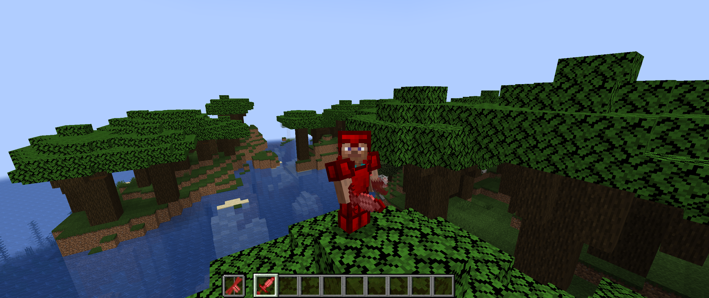
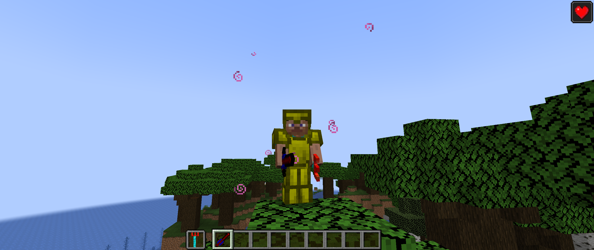
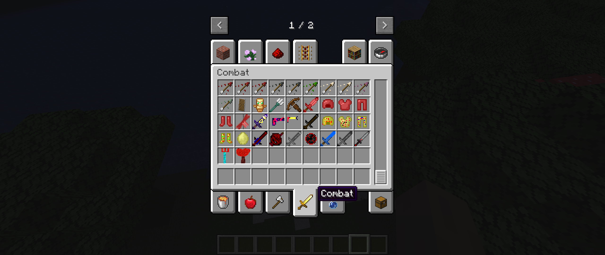
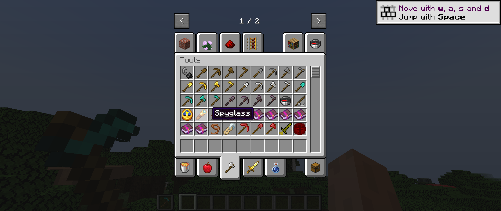
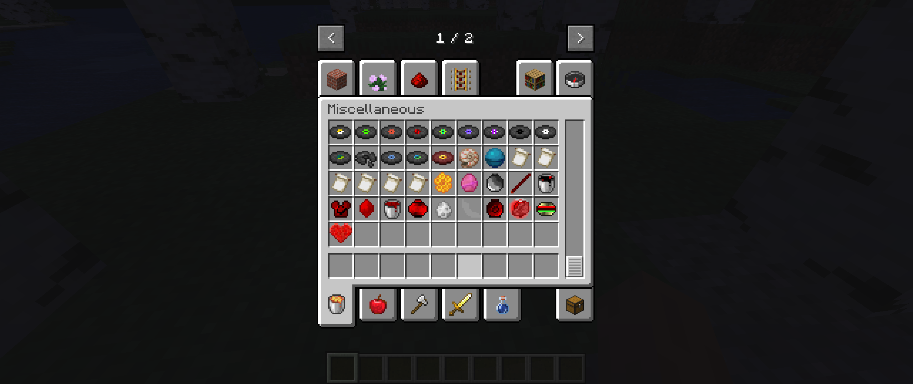
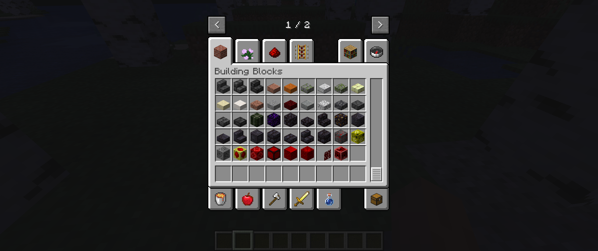

The Ruby Mod is my first mod. It introduces a new material called Ruby. Rubies can be use to make armor and a lot more. It adds a lot of new tools and weapons, including the Heart Sword. It also adds a new enemy and a new dimension.
Download the Ruby Mod      